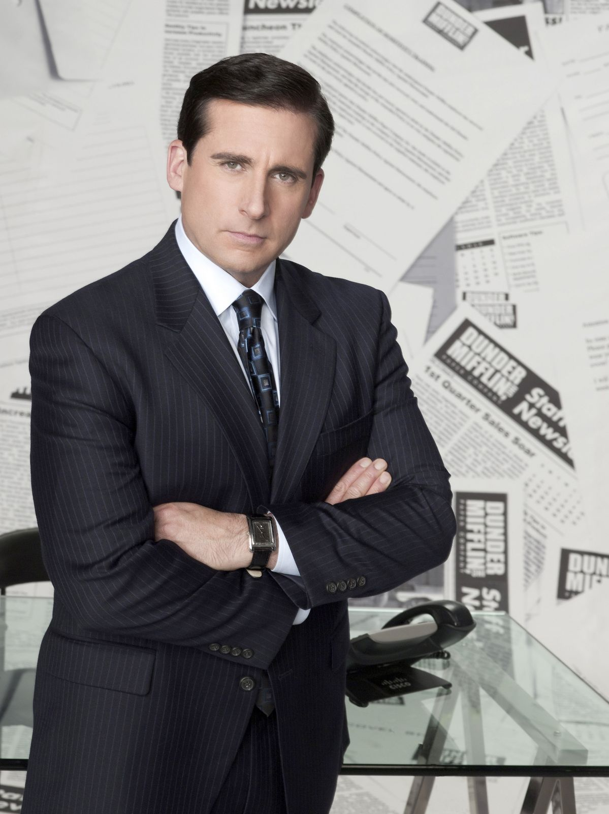

Michael Gary Scott
Hi. I’m Michael Scott — former Regional Manager of the Scranton branch of Dunder Mifflin and, according to multiple Dundie Award ceremonies, the World’s Best Boss.
I believe leadership means inspiring your team and reminding them that “you miss 100% of the shots you don’t take — Wayne Gretzky — Michael Scott.”
It might seem big at first… but once you get into it, it’s actually pretty easy to handle.
That’s what she said.